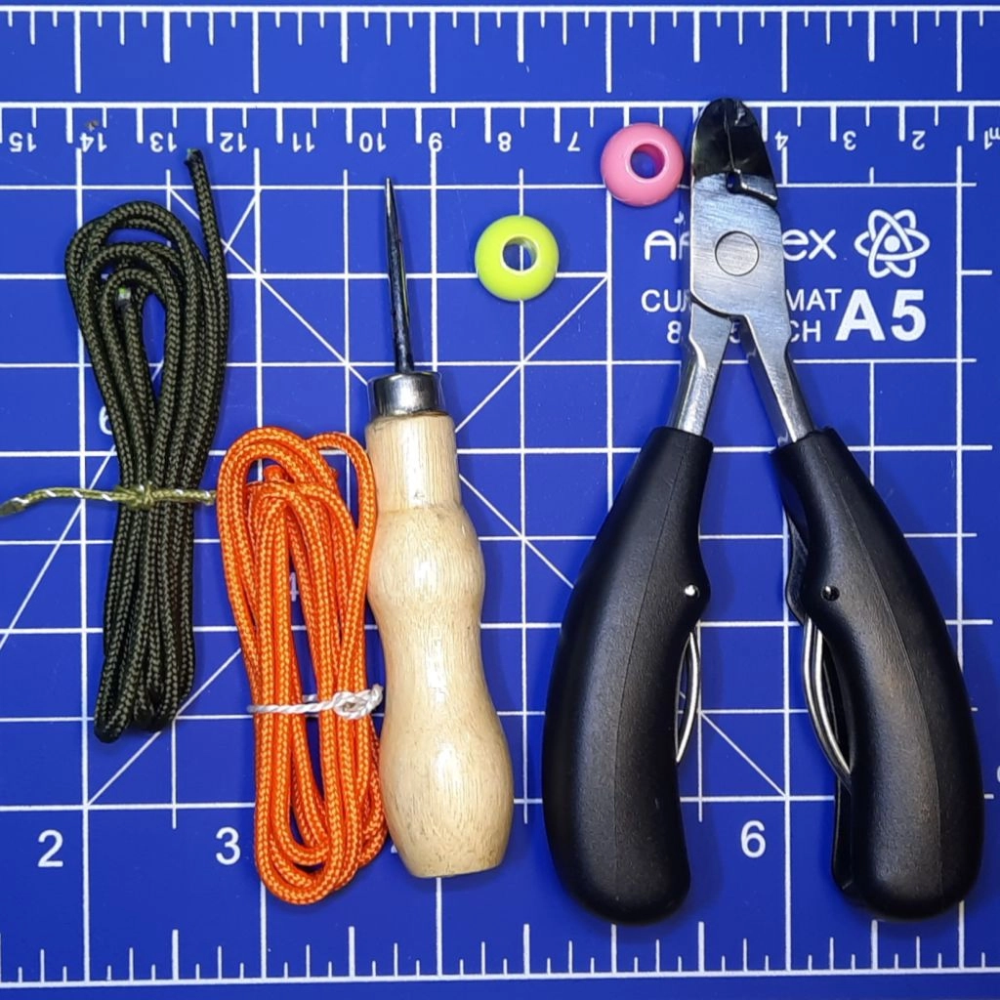
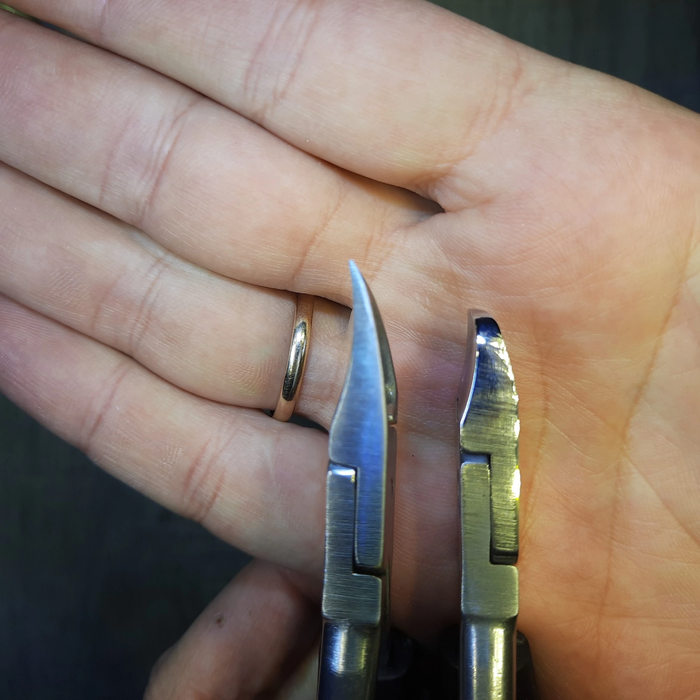
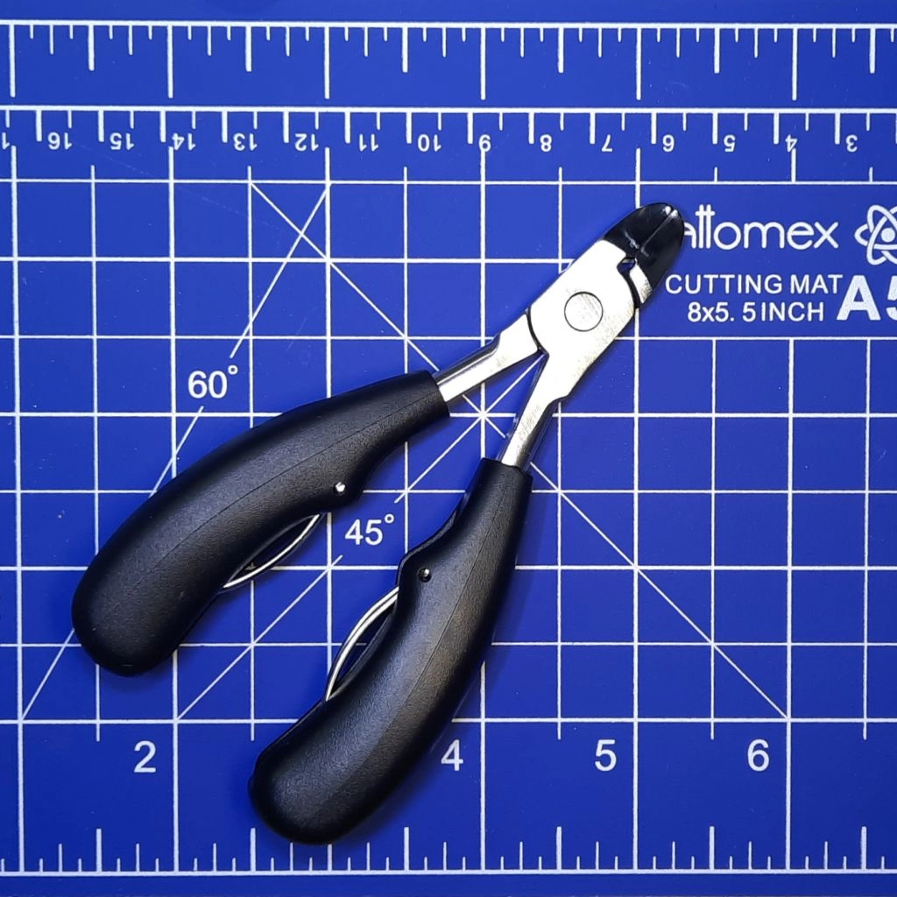
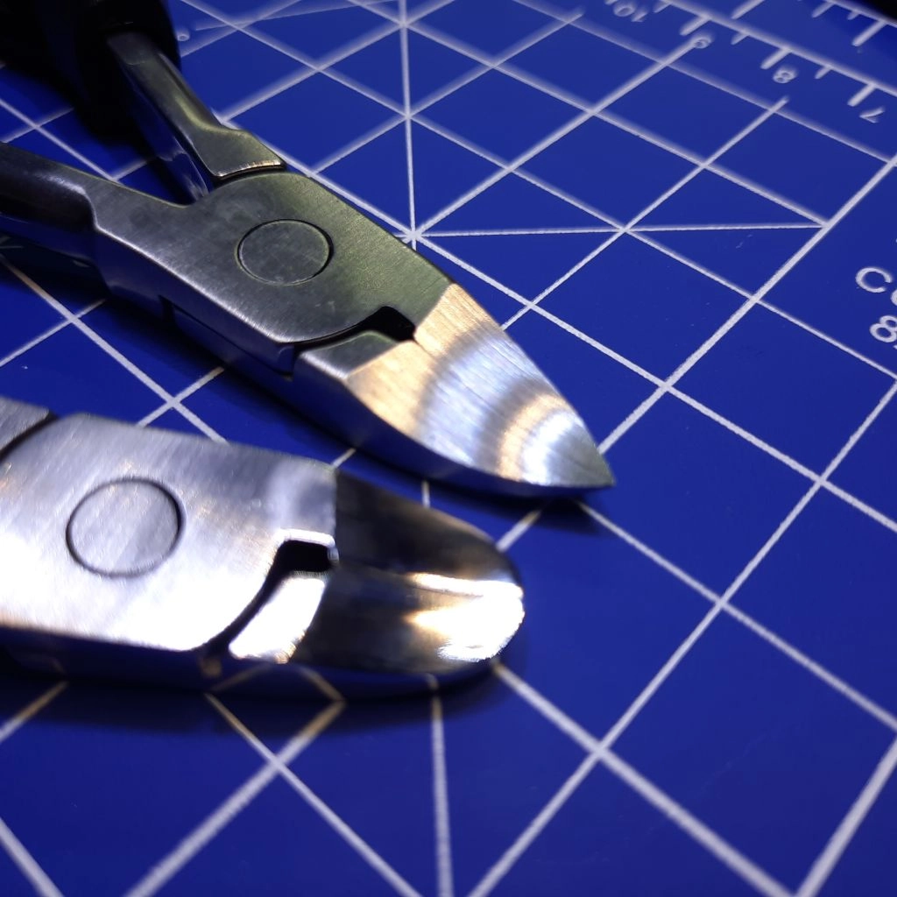
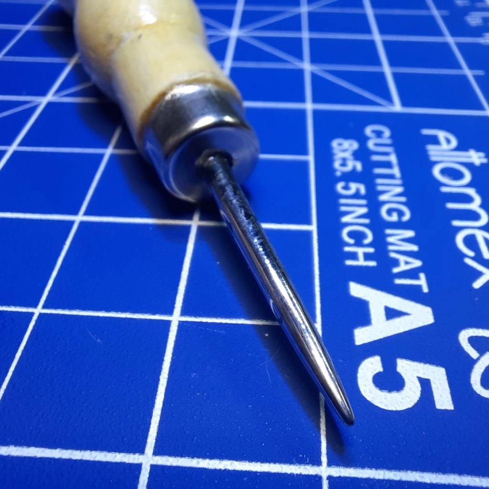
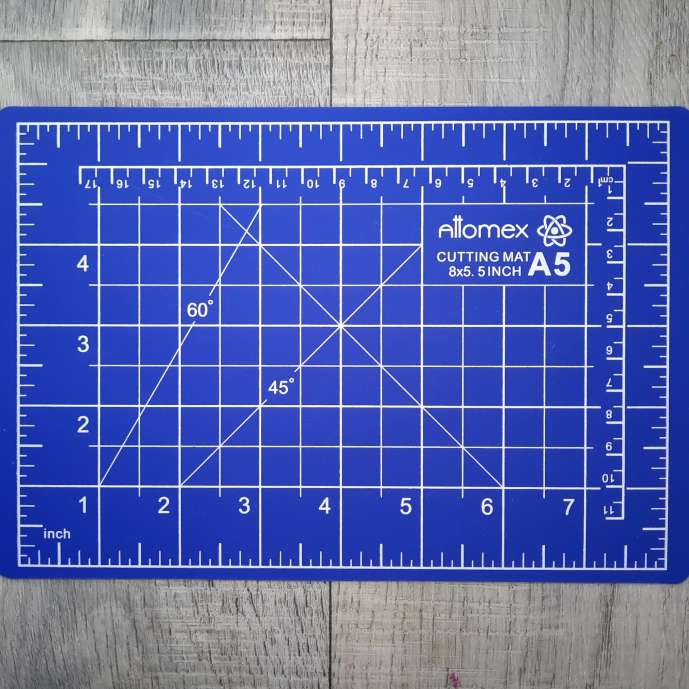
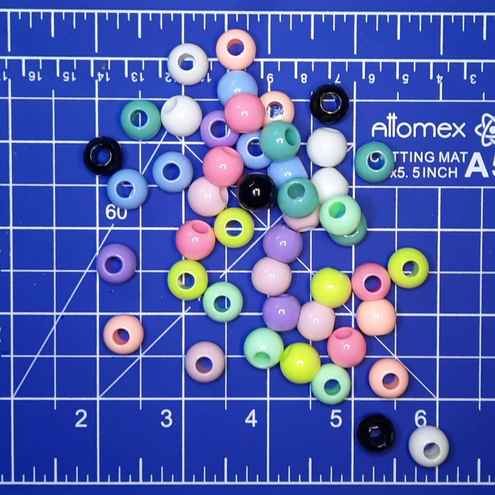

Готовый набор для паракорда: всё самое нужное для удачного старта уже собрано в одном месте.
Если Вам нужен набор для плетения из паракорда, с которым можно спокойно начать без лишней суеты, этот комплект собран именно под такую задачу.
Здесь нет случайных вещей и нет набора ради количества. Всё подобрано так, чтобы первый опыт не превратился в мучение с инструментом, шнуром и мелочами, а дал нормальный, понятный и приятный результат.
Что входит в набор
В набор входят два отрезка паракорда по 1 метру, простые бусины, специальные кусачки, свайка и коврик.
Паракорд для начинающих
Для старта набор может комплектоваться как 550 паракордом, так и 275. Это удобно, потому что задачи у первых изделий бывают разные. Если хочется более привычный и универсальный вариант, особенно под браслеты и более массивное плетение, лучше подходит 550 паракорд. Если нужен более компактный и аккуратный результат, можно использовать 275.
Кусачки: чем резать паракорд аккуратно



У стандартного варианта длинные губки и грубая шлифовка. Здесь губки укорочены, форма подправлена, режущая часть доведена, а концы отполированы.
Кусачки доработаны вручную под работу с паракордом. Губки укорочены, форма подправлена, режущая часть доведена, концы отполированы.
Теперь можно аккуратно и чисто откусить шнур именно так, как нужно, а не как получится.
⚠️ Важно: даже если очень хочется, не нужно кусать ими что-то ещё. Пусть это будет Ваш инструмент именно для паракорда.
❤️ Любите свой инструмент — и он прослужит Вам долго и верно.
Свайка для плетения

Свайка в таком исполнении изготавливается вручную специально для работы с узлами и плотным плетением.
Свайка в наборе изготавливается вручную. Это инструмент для работы с узлами и плотным плетением. В работе она очень удобна там, где пальцами уже трудно что-то подтянуть, поправить или ослабить за счёт полированного пулевидного кончика специальной формы.
Коврик для рукоделия и работы с паракордом

Коврик защищает стол, даёт нормальное рабочее место и помогает удобно отмерять шнур по разметке.
Коврик нужен для того, чтобы не портить стол во время работы и сразу иметь аккуратное рабочее место для плетения. На нём уже есть разметка и линейка, поэтому проще отмерять шнур и раскладывать всё по месту. Плюс у коврика приятная рабочая поверхность: на нём удобно резать, и сам процесс получается аккуратнее и собраннее.
Бусины

В стартовый набор входит 2 бусины, оптимально подходящие для первого опыта.